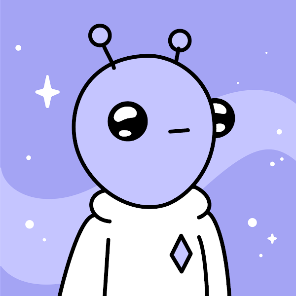
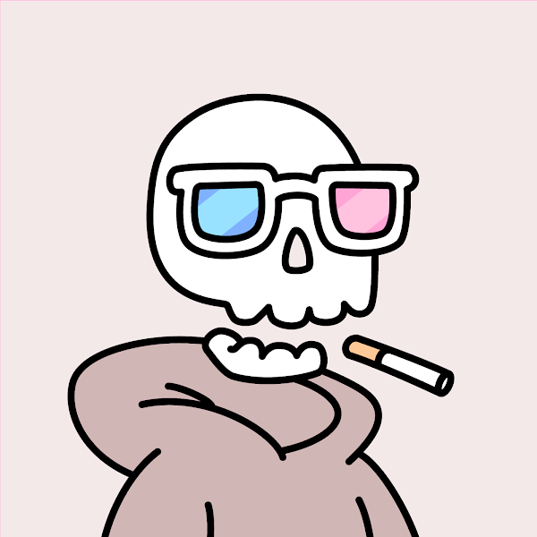
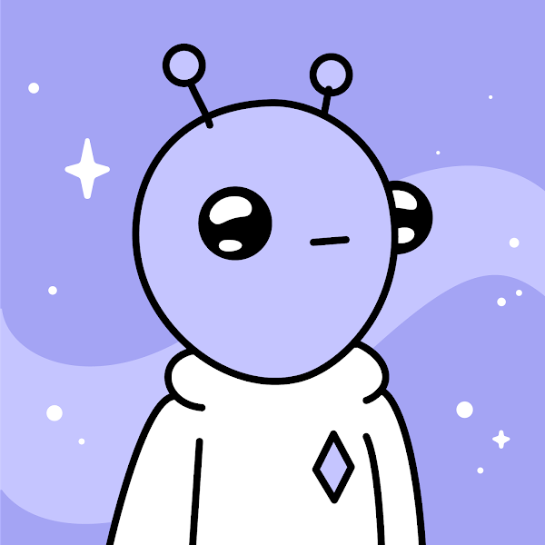
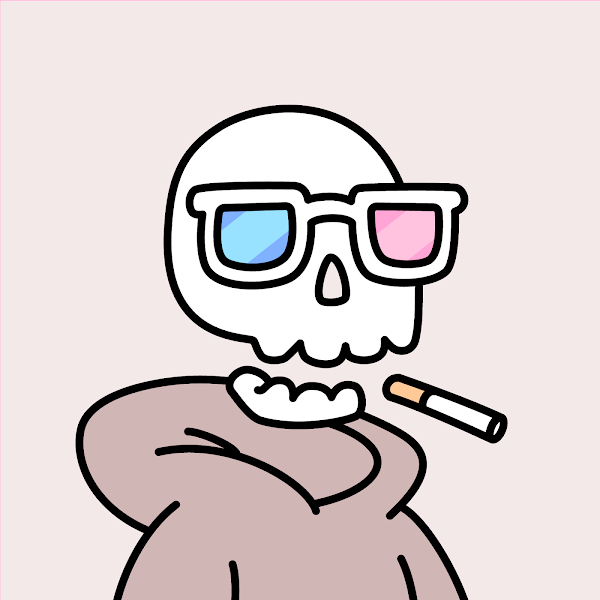

Non-fungible tokens are digital assets such as art, music, and sports that can be purchased and traded via the use of blockchain technology. Despite their great volatility, NFTs are not fungible, making them a distinct kind of asset priced according to their popularity and demand.
Non-fungible indicates it's unique and can't be replaced. For example, a bitcoin is fungible, meaning it may be exchanged for another bitcoin. But a unique trade card isn't fungible. It would be entirely different if you exchanged it for another card.
Just like Bitcoin, NFTs also contain ownership details for easy identification and transfer between token holders. Owners can also add metadata or attributes pertaining to the asset in NFTs. For example, tokens representing coffee beans can be classified as fair trade. Or, artists can sign their digital artwork with their own signature in the metadata.
Are NFTs safe?
Non-fungible tokens, like cryptocurrencies, are typically secure. Due to the decentralised nature of blockchains, it is difficult, if not impossible, to hack NFTs. One security issue associated with NFTs is that you may lose access to your non-fungible token if the platform that hosts it goes bankrupt.
popular NFTs
CryptoPunks
CryptoPunks are digital versions of punks. The NFTs themselves are pixelated pictures of digital art in the shape of 88 zombie punks, 24 ape punks, and nine alien punks. CryptoPunks was founded in 2017, which is a long time in the realm of NFTs. For those who are perplexed as to why anybody would want to buy a pixelated "punk," the NFTs are actually rather popular, with celebrities like Serena Williams, Jay-Z, and Snoop Dogg having them. The most expensive CryptoPunk NFT ever sold was an alien avatar for a whopping $7.58 million.


Doodles
Doodles are computerised renditions of Burnt Toast's artwork. According to the project's description as a "community-driven collectibles" NFT, around 10,000 Doodles are presently available for purchase. Doodles are whimsically coloured hand-drawn illustrations of anything from monkeys and mascots to kittens and aliens. Possessing a Doodle permits the collector to engage in community activities.
 



Bored Ape Yacht Club
The Bored Ape Yacht Club provides NFTs that are popular with celebrities, like Jimmy Fallon, DJ Khaled, and YouTuber Logan Paul. The BAYC is comprised of Yuga Labs-created animated apes with a variety of traits. Prices for the one-of-a-kind collection of 10,000 Bored Apes, which was introduced in April 2021, have been skyrocketing, with the highest price reaching $2.3 million so far. Owners of NFTs get membership cards that provide exclusive benefits such as invites to exclusive digital concerts.

Mutant Ape Yacht Club
If you'd rather have a "mutant" ape than a "bored" ape, this NFT collection may appeal to you more. The mutant collection, a follow-up to the Bored Ape Yacht Club, was launched in August 2021. The collection's first 10,000 pieces were sold for $96 million. However, the collection includes three different forms of "Serum" that may be used to "mutate" the original Bore Apes into Mutant Apes. Mutant Apes are now less popular than Bored Apes and can be purchased for about $32,600.
Components to consider when looking for a good NFT project
- Utility
- Founders
- Community
- Association
- Art
What advantages and benefits does the project provide its purchasers?
For instance, bored ape holders get exclusive merchandise sales, airdrops of "serum" that created another instantly valuable NFT, access to chat rooms and in-person events, and now free ApeCoin(bored ape coin), which boasts a market cap of $3.7 billion just two days after it started trading.These benefits promote interest in and demand for NFTs.
As certain the credibility and trustworthiness of the project's crew. Avoid initiatives led by anonymous individuals and do background checks on the team members.
For instance, Hossein Diba is the artist behind the NFT collection The Supreme Kong. Having previously worked on numerous Activision Blizzard video game projects such as Tomb Raider establishes his credibility and trustworthiness.
With NFT frauds on the rise, verifying the authors' trustworthiness is critical to your success and investment.
How much is the project being discussed on social media? How much faith do they have in it? Monitor the popularity of your chosen project on Twitter, Clubhouse, Reddit, Telegram, and Discord. Consider the engagement level of your content rather than the number of followers.
The association of a well-known celebrity or corporation significantly increases the success percentage of an NFT endeavour. For instance, Bored Ape Yacht Club is famous because to its purchasers, who include Stephen Curry, Jimmy Fallon, and other celebrities.
Associating your idea with well-known brands can make it stand out.
While the quality of the art is not the most critical component in determining a project's success, it is critical to consider its brand-ability. Is there anything in the artwork that stands out and has the potential to become iconic?
For example, despite its simplicity, the CryptoPunks artwork was groundbreaking and served as a prototype for other popular projects like Weird Whales due to its distinctive pixelated design and "meme-ability."
he more distinctive the aesthetic of the project, the greater its long-term worth.If you're looking for an in-depth tutorial on how to identify high-potential NFTs,this video is an excellent resource
Choosing a purchasing method
Once you've discovered a potential NFT project, you may acquire it in one of two ways:
When it "drops," mint an NFT.
Purchase an NFT on a secondary market
Minting
"Mining" refers to the practise of purchasing the NFT immediately following its release, prior to it reaching the secondary market.
This is great since the majority of NFT projects release their collections at rock-bottom pricing, and in some cases, for free, providing you with the highest profit margins possible.
However, because of strong demand and limited availability, high-quality NFT projects are exceedingly difficult to mint. That is why the majority of NFT initiatives publish whitelists in order to ensure that early backers have assured access to minting when the collection launches.To be whitelisted, join the project's Discord channel to learn about the project's eligibility requirements, as well as the day and time when the NFT collection will be live. (Typically, links to Discord groups are discovered on a project's Twitter page.)
After minting the NFT, you can quickly move it to secondary markets like as OpenSea and sell it for a better price by following the website's directions.
Purchasing via secondary marketplaces
Assume you arrive late to the concert and miss your opportunity to mint. However, do not despair; you may still purchase the NFT of your choosing on the secondary market.
How to purchase an nft
- Create a cryptocurrency wallet. To acquire an NFT, you must first get bitcoin and attach it to your funded cryptocurrency wallet.
- Select an NFT Marketplace.
- Join the Marketplace by Connecting Your Digital Wallet.
- Locate an NFT that appeals to you.... Place a Bid.... Complete the Transaction.
to check out many other NFTs projects visit:OpenSea
You can always join the NFT project's discord which enables holders and people new to the project to chat and see latest project's news
Hint: NFTs communities are mostly active on twitter
Always watch out for scammers when willing to start and purchase an NFT